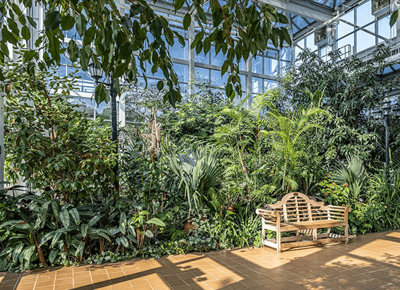

NATIONAL GEOGRAPHIC

Rock climbing is getting more popular and that concerns conservationists
TRAVEL
Even before climbing star Alex Honnold’s stunning “free solo” ascent of Yosemite’s El Capitan in 2017, rock climbing was gaining a foothold. Now, with its debut at this year’s Tokyo Olympics, the once niche sport is set to reach new heights.
Yet the popularity of rock climbing and its sister sport, bouldering (where climbers scramble up large rocks without the use of ropes or harnesses), is raising questions about the damaging environmental effects of climbing chalk a ubiquitous and essential climbing tool.
Made from magnesium carbonate, climbing chalk is the same substance that gymnasts and weightlifters use to improve their grip on bars and weights. In fact, it was first introduced to rock climbing in the 1950s by John Gill, who was a gymnast in college before he turned his attention to bouldering. Since then, amateur and professional climbers alike have come to depend on the chalk’s desiccating and friction-inducing properties and have been leaving streaks of the stuff on rock faces around the world.
The resulting “chalk graffiti” has become so bad in the United States that parks are beginning to restrict its use. Utah’s Arches National Park allows only colored chalk that mostly matches rocks, while Colorado’s Garden of the Gods National Natural Landmark banned all chalk and chalk substitutes. Native American tribes have declared areas under Indigenous control off-limits to climbers, not only because of unsightly chalk marks but also to preserve spiritually important areas.
Beyond the visual pollution, new research suggests chalk may be harming the flora that grows on rocks. The latest study on the effects of climbing chalk, released October 2020, found that it negatively impacted both the germination and survival of four species each of rock-dwelling ferns and mosses in laboratory settings. Wiping it off doesn’t seem to help; chemical trails on cleaned boulders changed the rock surface’s pH balance, which could affect the ability of plants to grow there in the future.
That matters because some climbing spots, such as erratic boulders (the study’s focus), host unique ecosystems. These erratic boulders rocks scattered across the globe by glaciers at the end of the Ice Age are islands of vegetation, different from the land they sit on. As such, they may hold information about that era and how these plants travel.
It’s not even clear whether chalk improves climbing performance at all. Some papers found no additional grip benefits, while others found the opposite. Some climbers may find it helpful, says Daniel Hepenstrick, a co-author of the 2020 study and a doctoral candidate at ETH Zürich. But more likely it’s a psychological aid. “When you face a problem on a rock, what do you do?” he says. “You powder your hands and go on.”
Compounding the problem
Adding to climbing chalk’s potentially problematic nature is how it’s sourced. Magnesium carbonate (MgCO3) is processed from magnesite, a mineral buried deep within the Earth. According to Climbing Magazine, more than 70 percent of the world’s supply comes from mines in China’s Liaoning Province, where satellite photos show magnesium carbonate powder piled up, and resembling snow, around one mining and processing plant.
The Chinese government has strengthened laws around mining to reduce its environmental impact and proposed remediation. But De-Hui Zeng, an ecologist at Liaoning’s Chinese Academy of Sciences, who is studying the substance, says his research squares up with Hepenstrick’s. Zeng says soil samples with elevated magnesium levels from the mining sites showed reduced nutrients, low microbial life, and plant death.
Hepenstrick emphasizes that his study one of the first to examine chalk’s effect on the environment is far from conclusive. Additional work needs to be done to understand the full ramifications of climbing chalk. But that’s easier said than done.
The environmental impact of rock climbing, in general, isn’t well known. Access is one limitation, as most scientists are not climbers. Even in accessible areas, the variable terrain itself can present a challenge to measuring climbing’s effects. “It’s been difficult to tease apart the mechanisms that are potentially impacting the sensitive cliff communities,” says Peter Clark, a doctoral candidate at the University of Vermont, who is studying cliff ecology.
Climbing groups such as Access Fund, an advocacy organization that provides guidelines to the climbing community, are taking a wait-and-see approach to Hepenstrick’s report before making any policy adjustments. “It’s data for us,” says executive director Chris Winter. “If there is a conservation concern, we take that quite seriously.”
‘Clean’ climbing?
Until additional studies can be conducted, responsibility is mostly left to climbers, who “do care about nature,” says Hepenstrick, an occasional climber himself. “You could inform them that using climbing chalk in a certain way could have an impact, and they would take that in.”
Comments :
- john Very good
- john Very good
Leave a Reply
Your email address will not be published. Required fields are marked*
Related posts:
-
 This new park gives different views of the Grand Canyon with no crowds
This new park gives different views of the Grand Canyon with no crowdsGrand Canyon National Park draws 4.7 million visitors a year to the northwest corner of Arizona to hike, camp, or watch wildlife. But most of them don’t realize that the lands within and surrounding the park are sacred
View article -
 How to plan a wild camping adventure in Scotland
How to plan a wild camping adventure in ScotlandPitching a tent far from civilisation, where the only sounds come from the birds and the whistling of the wind through the trees, makes for a restorative break for anyone who enjoys spending time in nature.
View article -
Atlanta isn’t all that Georgia has to offer. Here are 7 other worthy trips.
There’s a famous saying in the South: “Whether you’re going to heaven or hell, you’re going through Atlanta.” It’s hard to avoid if you are flying or connecting through Hartsfield-Jackson International, one of the world’s busiest
View article